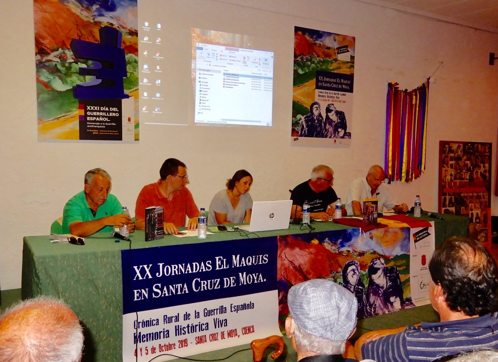
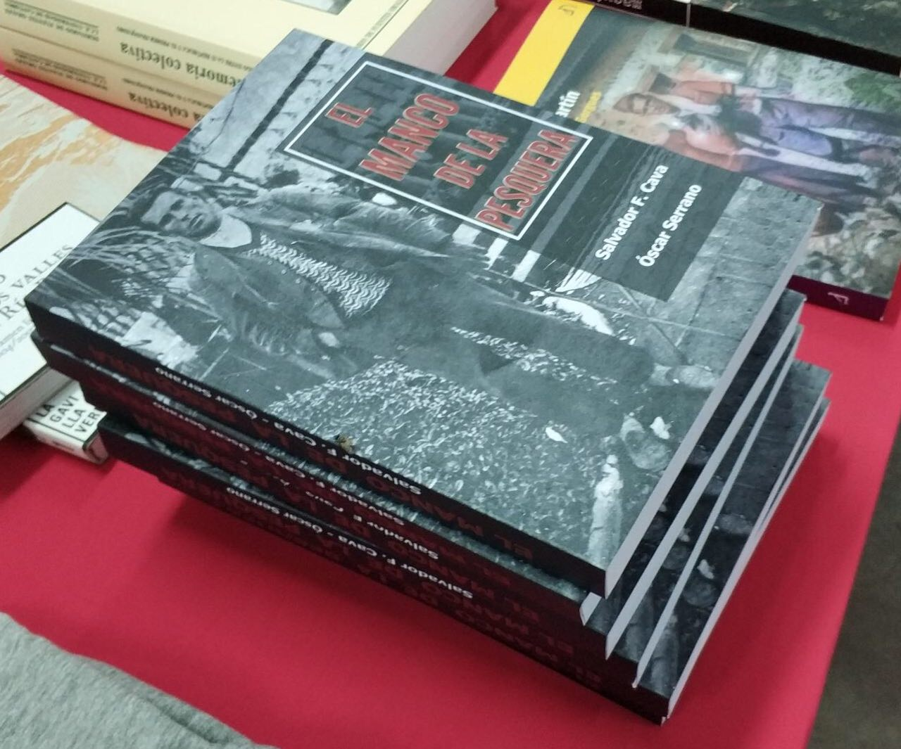

El libro sobre
El Manco de La Pesquera
En la librería Primado de Valencia, se presentó el nuevo libro biográfico de Basiliso Serrano. La segunda edición se presentó por primera vez allí. Se abordó la reiterada presencia del Manco en algunos libros editados en Valencia a finales de la década de los ochenta. Representando su relevancia en la postguerra y el nacimiento del mito tras su muerte. Con el secretismo sobre su desaparición y muerte.
Presentación en santa cruz de Moya
El libro del Manco de La Pesquera se presentó el 5 de octubre en Santa Cruz de Moya(Cuenca).
La historia del guerrillero pesquereño tuvo su espacio en las XX jornadas del Maquis que se celebran en la localidad conquense, organizadas por La Gavilla Verde. Muchos asistentes se llevaron su ejemplar firmado por los dos autores, agotando la primera edición.
Los autores incidieron en humanizar al protagonista de esta biografía y en el trabajo de investigación durante años para documentar este libro.
El histórico combatiente antifranquista de 97 años, Lluís Martí Bielsa, asistió en primera fila a la presentación horas antes de morir en la madrugada del día 6.
Próximamente se presentará en Valencia y Cuenca.
La prensa conquense daba cuenta de la llegada del nuevo libro a las jornadas:
http://www.lasnoticiasdecuenca.es/provincia/libro-sobre-manco-pesquera-llega-xx-jornadas-del-maquis-44120


Presentación en La Pesquera
Números vecinos de La Pesquera quisieron asistir el pasado 27 de julio a la presentación, por primera vez, del nuevo libro sobre Basiliso Serrano, “El Manco de La Pesquera”. Visitantes que nos acompañaron desde otros puntos como Valencia, Villalpardo, Casas Ibáñez, Santa Cruz de Moya, Villamalea, Villargordo del Cabriel, Iniesta, entre otros, quisieron estar presente en el momento que un libro ve la luz por primera vez.
El acto contó con representación institucional encabezada por la alcaldesa de La Pesquera Carmen García, y representación de la Diputación Provincial de Cuenca, con la diputada provincial Rocío Pardo. Los dos autores que presentaron algunas pinceladas más representativas de este libro, para el que se han utilizado más de 170 sumarios judiciales y la revisión de las actas de pleno de 46 años de La Pesquera. Después de la presentación, muchos asistentes adquirieron varios libros para familiares y amigos, aguardaron pacientemente la cola para llevarse sus ejemplares firmados de la biografía del guerrillero pesquereño. Un vino de honor, que sirvió Bodegas sirvió para cerrar el acto que se prolongó por más de dos horas.